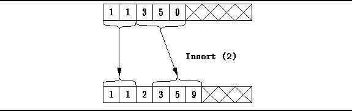

Data Structures and Algorithms
with Object-Oriented Design Patterns in C++
Data Structures and Algorithms
with Object-Oriented Design Patterns in C++
When inserting an item into a sorted list
we have as a precondition that the list is already sorted.
Furthermore, once the item is inserted,
we have the postcondition that the list must still be sorted.
Therefore, all the items initially in the list that are larger
than the item to be inserted
need to be moved to the right by one position
as shown in Figure  .
.

Figure: Inserting an Item into a Sorted List Implemented as an Array
Program defines the Insert member function
for the SortedListAsArray class.
This function takes as its lone argument
a reference to the Object to be inserted in the list.
Recall that the Insert function
provided by the ListAsLinkedList class
simply adds items at the end of the array.
While this is both efficient and easy to implement,
it is not suitable for the SortedListAsArray class
since the items in the array must be end up in order.

Program: SortedListAsArray Class Insert Member Function Definition
The Insert function given in Program
first checks that there is still room in the array for one more item.
Then, to insert the item into the list,
all the items in the list that are larger than the one to be inserted
are moved to the right.
This is accomplished by the loop on lines 5-10.
Finally, a pointer to the item to be inserted is recorded in the
appropriate array position on line 11.
In the worst case, the item to be inserted is smaller than
all the items already in the sorted list.
In this case, all  items must be moved
one position to the right.
Therefore, the running time of the Insert routine is O(n).
items must be moved
one position to the right.
Therefore, the running time of the Insert routine is O(n).
 Copyright © 1997 by Bruno R. Preiss, P.Eng. All rights reserved.
Copyright © 1997 by Bruno R. Preiss, P.Eng. All rights reserved.